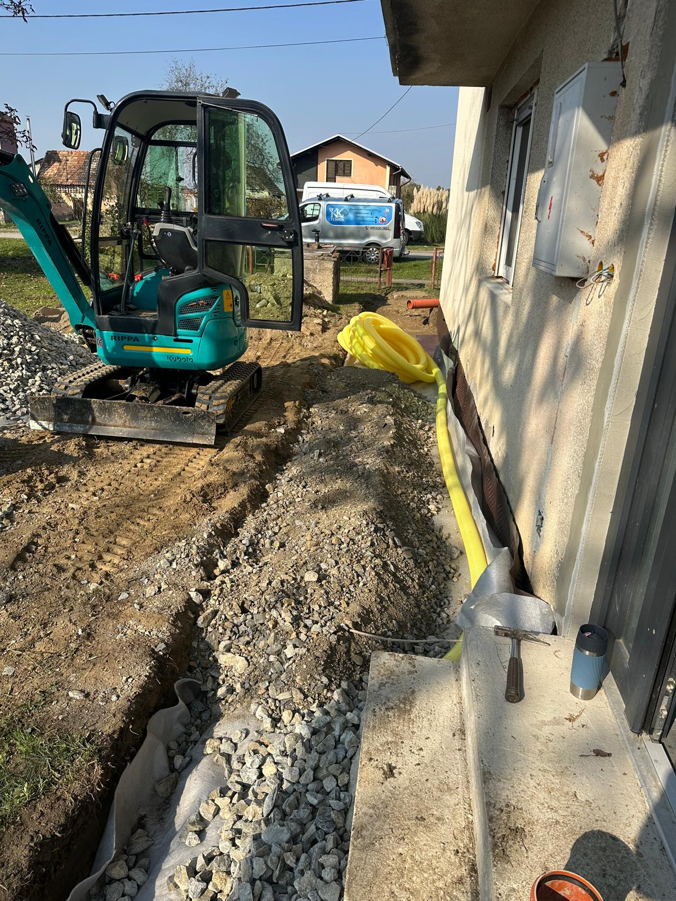
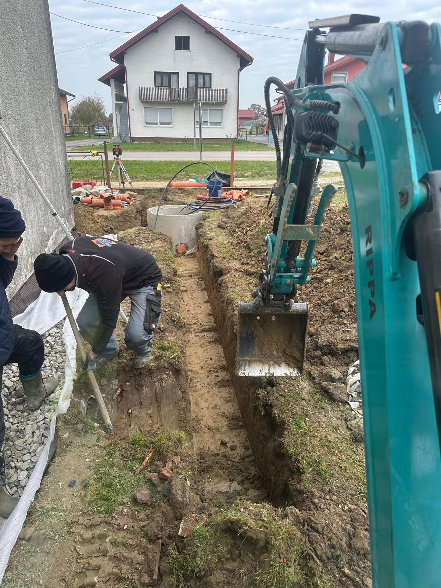
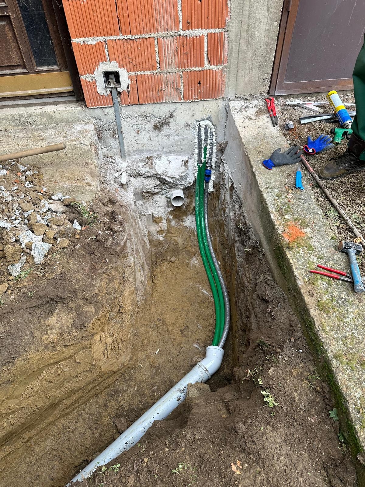
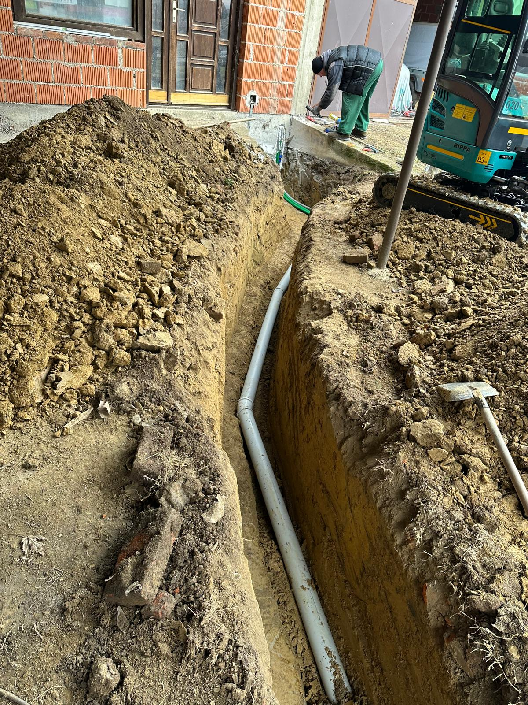
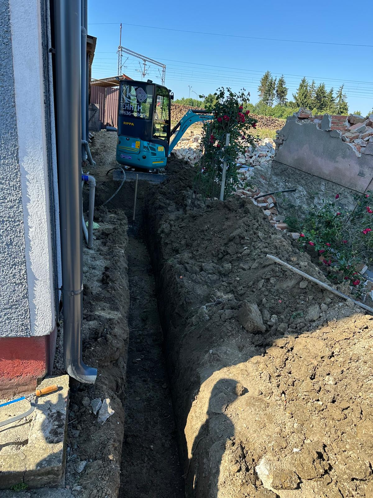
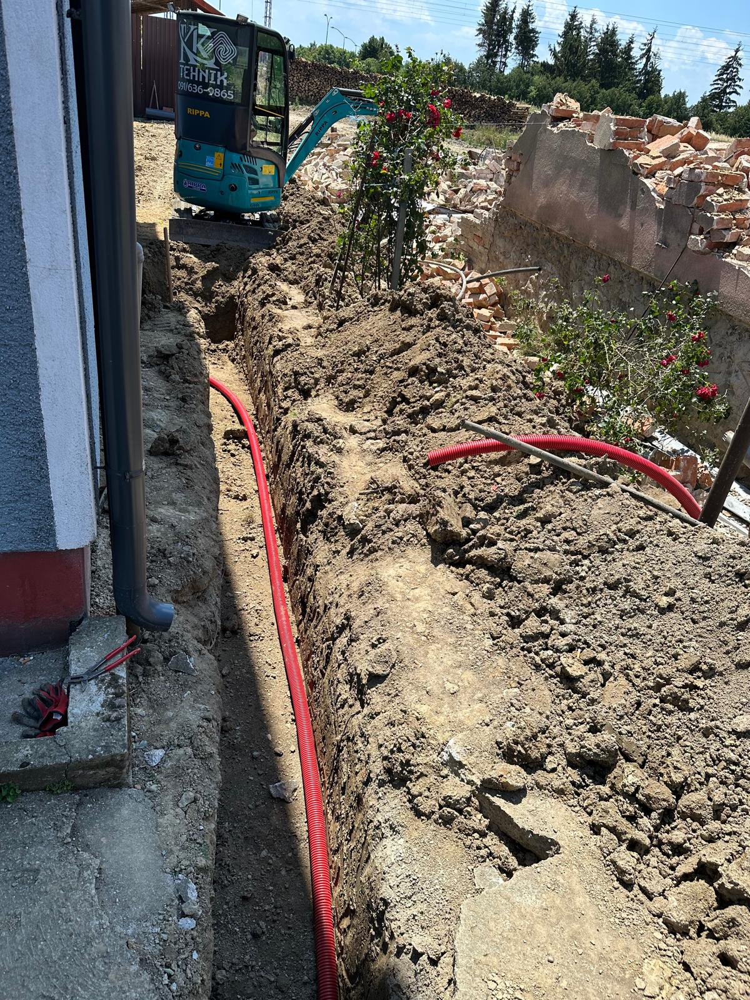
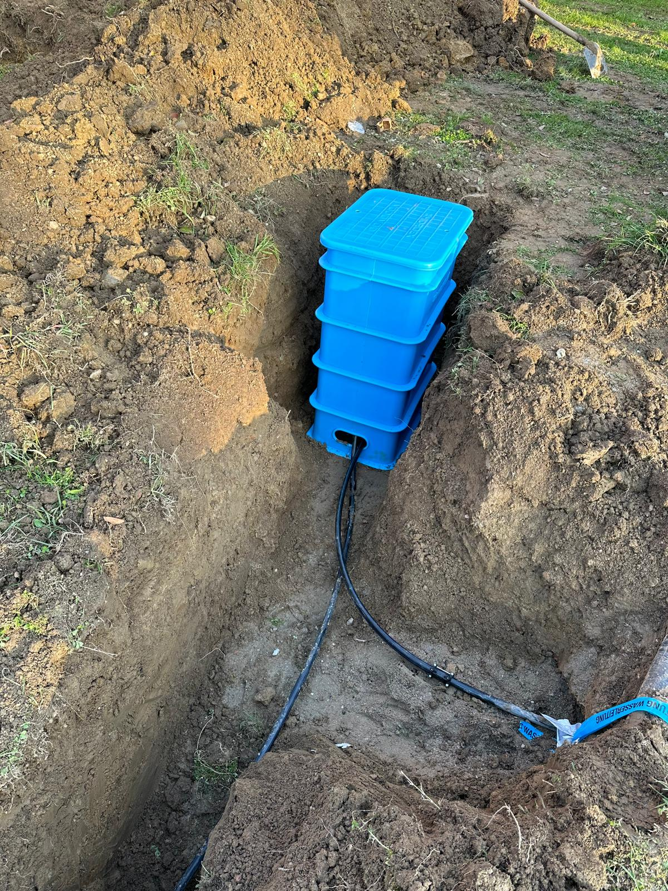
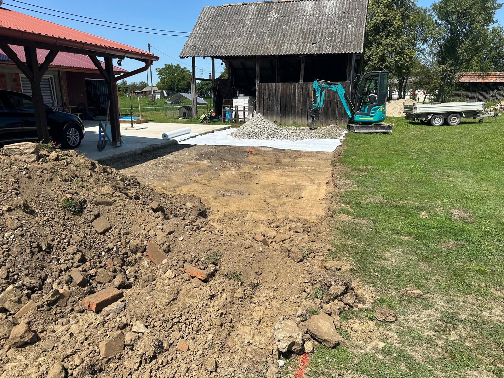
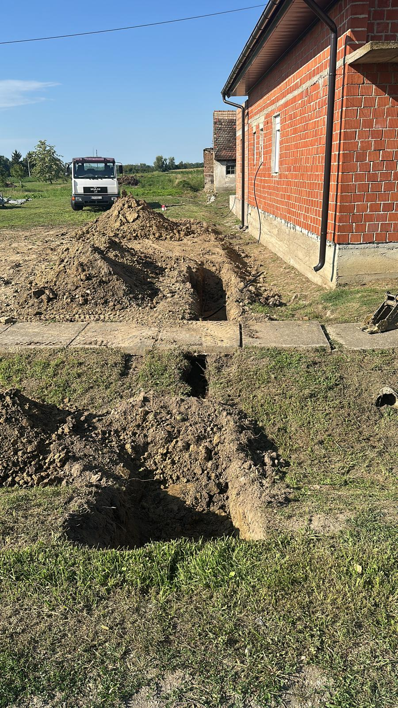

Slike radova










KK Tehnik izvodi iskope za priključke na gradski vodovod te ostale zemljane radove potrebne za postavljanje vodovodnih instalacija. Radove izvodimo precizno, sigurno i u skladu sa svim tehničkim propisima kako bismo omogućili kvalitetno spajanje objekta na vodovodnu mrežu.








